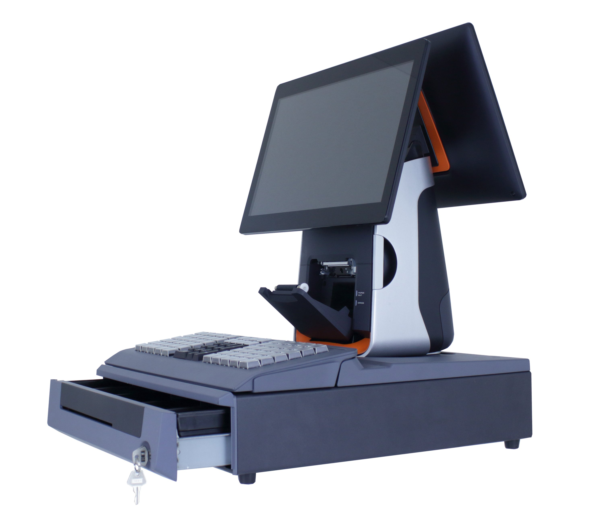
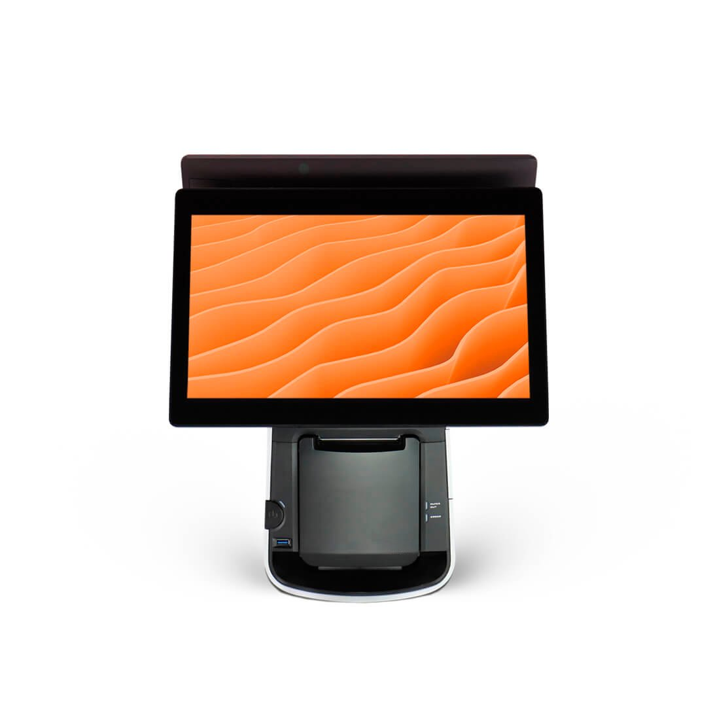
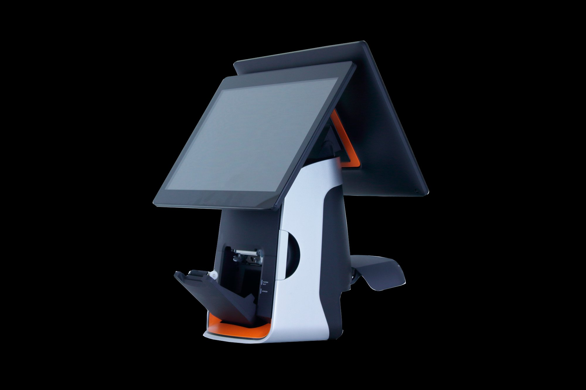
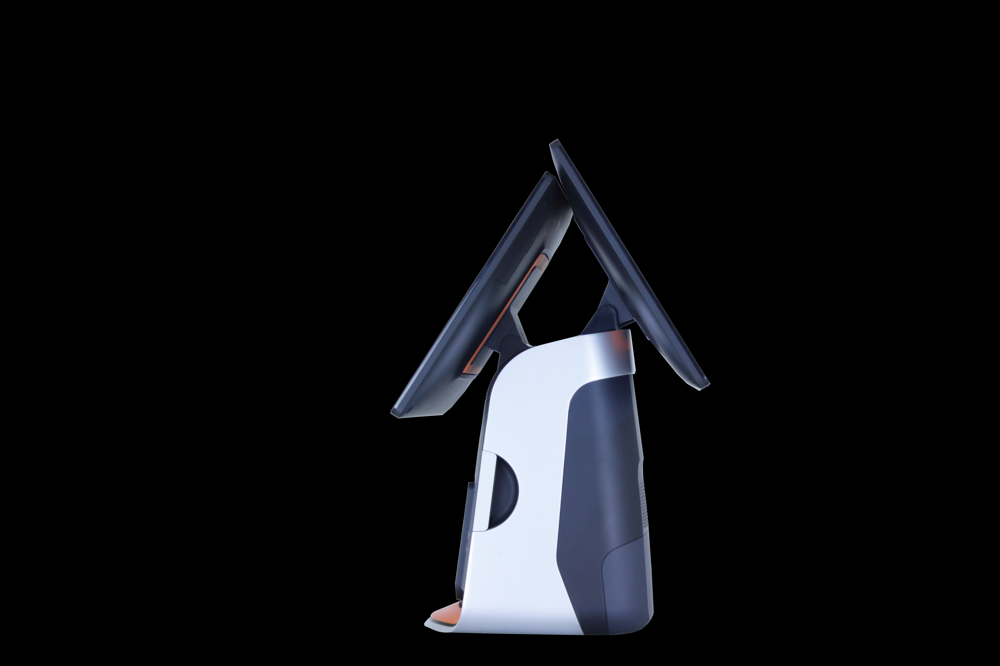

Contacto
- Bogotá, Colombia
POS de doble pantalla HD 15,6" con impresora SEIKO integrada y diseño premiado




El K&T-T80 Plus es el terminal POS ganador del Reddot Design Award y del iF Design Award, reconocido internacionalmente por combinar elegancia, rendimiento y precio competitivo. Su doble pantalla táctil HD de 15,6" —una para el cajero y otra orientable para el cliente— junto con la impresora térmica SEIKO de 80 mm integrada a más de 150 mm/s, lo convierte en la solución más completa del segmento.
El T80 Plus integra ambas pantallas en un único cuerpo compacto, eliminando la necesidad de soportes externos o cables adicionales.
El T80 Plus soporta Windows y Android según configuración del proyecto, facilitando la integración con cualquier software POS del mercado.
Plataforma empresarial para integración con ERP, software de facturación, gestión de inventario y aplicaciones corporativas. Soporte completo para periféricos.
Plataforma ágil y económica para restaurantes, cafeterías y negocios que requieren aplicaciones POS nativas en Android con alto dinamismo.
Alternativa de código abierto para proyectos con requerimientos de seguridad avanzada, personalización profunda o integración con sistemas propietarios.
Doble reconocimiento internacional en diseño de producto industrial. El T80 Plus eleva la imagen de cualquier punto de venta.
Impresora SEIKO de 80 mm a >150 mm/s con soporte para código de barras y QR. Autocorte automático para mayor productividad.
La pantalla orientable del cliente muestra el detalle de la transacción en tiempo real, generando confianza y reduciendo errores.
Intel Braswell N3160 Quad Core garantiza un rendimiento estable para aplicaciones POS exigentes en operación continua.
64 GB SSD MSATA para arranque ultrarrápido, mayor durabilidad frente a discos mecánicos y bajo consumo energético.
5 puertos USB, Gigabit Ethernet, 2 puertos serie DB9 y RJ11 para cajón de efectivo cubren todos los periféricos POS estándar.
El T80 Plus equipa un procesador Intel® certificado para entornos comerciales, con configuraciones de RAM y almacenamiento optimizadas para POS.
El T80 Plus integra los puertos esenciales para construir una estación POS completa sin necesidad de hubs externos.
Acompañamos proyectos en Colombia, Centroamérica y El Caribe con enfoque consultivo y soporte especializado.
Podemos integrar el T80 Plus con turnos, cartelería digital, autogestión y operación omnicanal bajo una sola plataforma.
No solo entregamos hardware. Analizamos su operación y recomendamos la configuración adecuada para su sector.
Acompañamiento preventivo y correctivo según el alcance contratado, con equipo técnico especializado.
Diseño, configuración, integración y pruebas para despliegues corporativos con altos estándares de calidad.
Soluciones preparadas para crecer por sede, ciudad, país o región junto con su operación.
Solicite una cotización del K&T-T80 Plus y permita que nuestro equipo diseñe la solución POS perfecta para su operación.